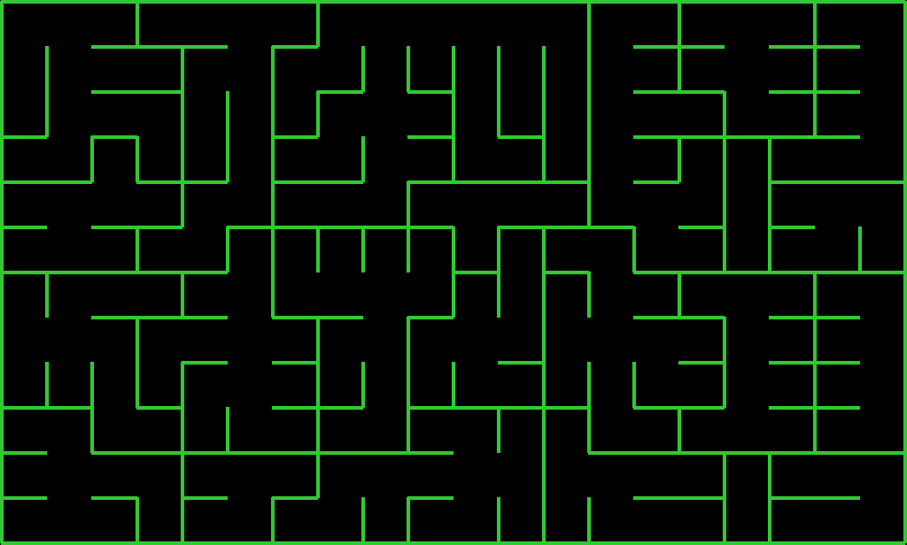
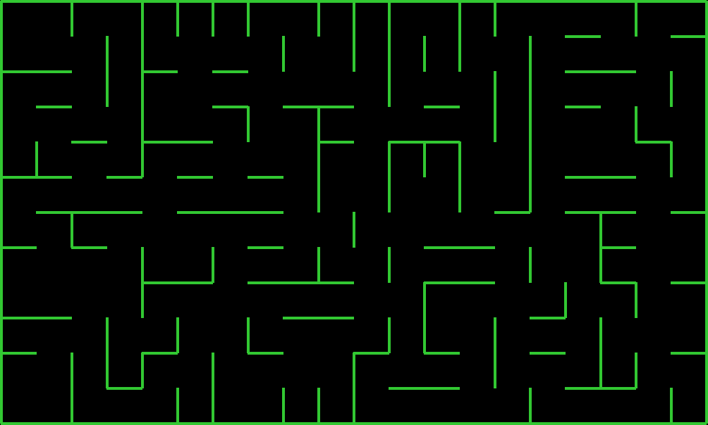
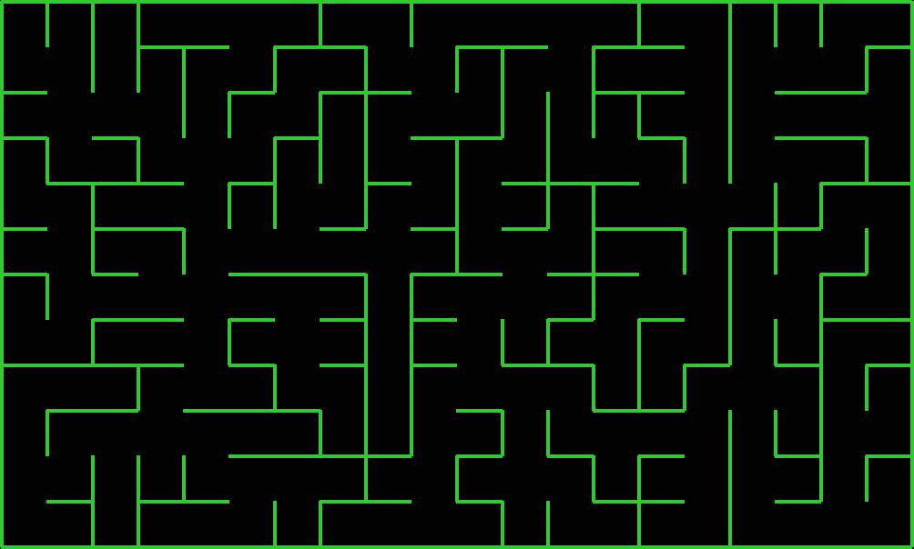

Hace mucho tiempo, recuerdo haber leído en algún libro (no recuerdo cuál) algo como:
Aunque no es una afirmación muy precisa ni explicativa, es bastante cierta, y te da una buena pista inicial para empezar a crear un algoritmo que genere laberintos.
Después de algunos bocetos en papel, empecé a implementar un algoritmo bastante sencillo. La idea es así:
Hay una matriz, donde cada elemento es un cuadrado o cubículo. Cada cubículo puede tener o no algunas de sus cuatro paredes (arriba, abajo, izquierda o derecha). Si no tiene alguna de sus paredes, eso significa que hay una conexión con otro cubículo, es decir, que uno puede "caminar" de un cubículo a otro, ya que no está separado por ninguna pared.
La conexión de un cubículo A a otro cubículo B se llama "salida", ya que uno puede "salir" de A y pasar a B. Naturalmente, lo que para uno (A) es una salida, para el otro (B) puede ser una entrada, pero para simplificar las cosas, en el código solo se habla de "salida".
En principio, cada cubículo cuenta con las cuatro salidas (arriba, abajo, izquierda y derecha) como salidas posibles, pero mediante un proceso de selección, se van eliminando algunas opciones inválidas en base a dos restricciones:
Después de este proceso, nos queda el conjunto de las salidas posibles/válidas para un determinado cubículo. De ese conjunto, si no es vacío, elegimos (de forma aleatoria) exactamente una salida.
Entonces, para generar el laberinto, simplemente hay que conectar de forma random los cubículos (cumpliendo con las restricciones mencionadas). En la presente implementación, eso se traduce en ir avanzando por la matriz y elegir, de forma random, una salida válida para cada cubículo.
La idea empezaba a tomar forma, pero este fue el resultado:

Es decir, parece un laberinto, se ve bastante bien, pero está fragmentado, sectorizado: no se puede ir desde cualquier punto del laberinto a cualquier otro punto.
Para lograr eso, mi primera (pésima) idea fue que cada cubículo pueda tener más de una salida.
El resultado:

Resolvía el problema anterior, pero generaba uno nuevo: ahora había muchos caminos posibles de un punto a otro. O sea: el laberinto perdía la gracia.
Así que había que volver atrás, y pensar otra cosa.
Una opción (perezosa) era generar el laberinto sectorizado y después eliminar algunas paredes de forma random. Con un poco de suerte es algo que puede funcionar, pero no resuelve realmente el problema.
La otra opción, más correcta, era detectar los sectores, y abrir solamente una pared por sector, para conectarlos entre ellos. Suena fácil, pero no es tan sencillo de implementar. Por suerte, en ese momento vi una clase sobre inteligencia artificial, que si bien hablaba sobre cómo resolver laberintos, no sobre cómo crearlos, me ayudó a pensar cómo hacer el algoritmo que identifica los sectores.
La idea es la siguiente:
Una vez esbozado el laberinto, cada cubículo tiene su número de sector en None.
Por cada sector que se va a identificar, se crean dos listas: una tiene los cubículos ya procesados/analizados (llamada "ya_agregados"), y la otra almacena temporalmente los que se van a analizar (llamada "nuevos_miembros").
Supongamos que empezamos por el primer cubículo (el de arriba a la izquierda). Le asignamos el número de sector 0, lo agregamos a "ya_agregados", y vemos si tiene vecinos (es decir, cubículos que estén a su lado y estén conectados, no separados por ninguna pared). Si tiene vecinos, los agregamos a "nuevos_miembros" y repetimos el mismo procesamiento con ellos, solo que ahora chequeamos dos cosas: que sean vecinos y que no estén en "ya_agregados". Seguimos repitiendo este proceso hasta que no haya más elementos en "nuevos_miembros"; lo cual sucederá cuando ya se haya identificado todo el sector.
Si hacemos esto con todos los sectores, nos quedará un laberinto fragmentado, sí, pero con los sectores identificados y numerados.
Hecho esto, solo resta elegir (de forma random) alguna de las paredes que conectan cada uno de los sectores, y listo: nos quedará un laberinto de un solo sector, tal como se puede observar en la siguiente imagen:

Después de eso, pensé: ahora el laberinto puede esbozarse inicialmente de cualquier manera, total después el algoritmo de identificar y unir sectores se encarga de que todo quede bien. Así que armé distintos estilos (algunos más difíciles que otros).
A continuación, se muestra cómo se generan, paso a paso, cinco tipos de laberintos: